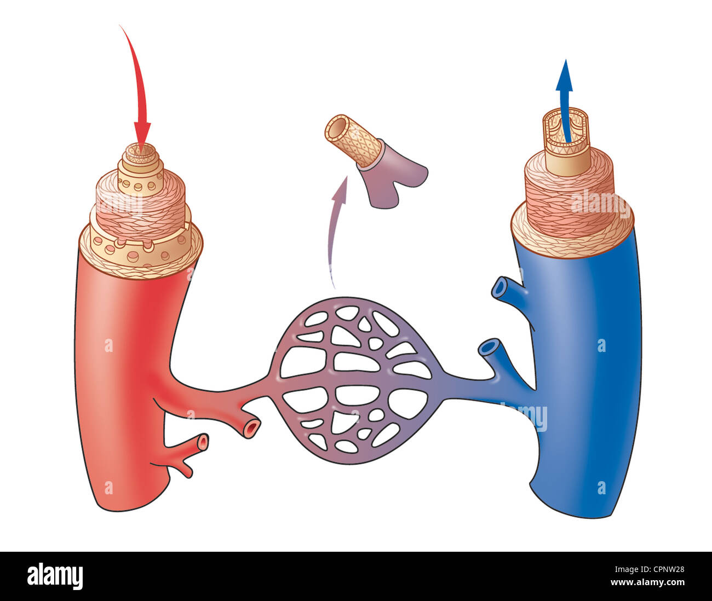

Opinión
En mi opinión esto sería un gran avance tecnológico para la salud de las personas ya que esto nos permitirá a salvar más gente y también nos permitirá a ya no esperar a que alguien le done algún órgano.
